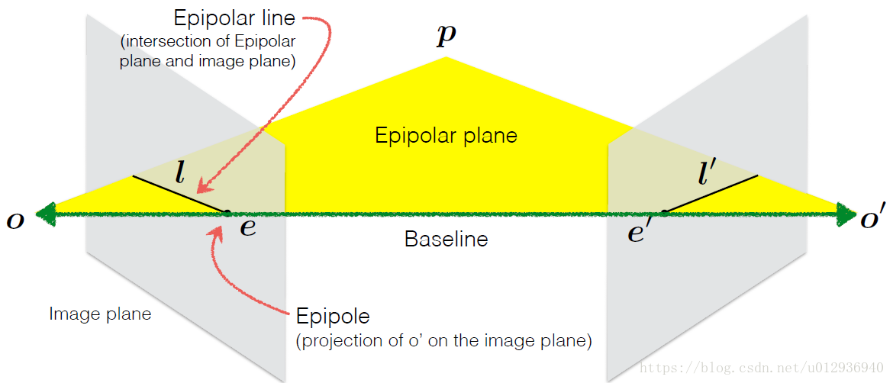
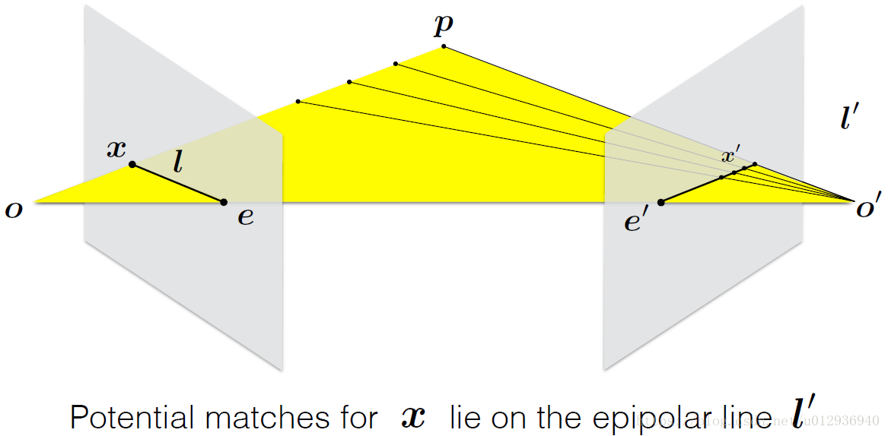

同步定位与地图构建（SLAM或Simultaneous localization and mapping）是一种概念：希望机器人从未知环境的未知地点出发，在运动过程中通过重复观测到的地图特征（比如，墙角，柱子等）定位自身位置和姿态，再根据自身位置增量式的构建地图，从而达到同时定位和地图构建的目的。
SLAM的核心工作有两个：
- 地图构建
研究如何把从一系列传感器收集到的信息，集成到一个一致性的模型上的问题。它可以被描述为第一核心问题：这个世界长什么样？地图构建的核心部分是环境的表达方式以及传感器数据的解释。
- 定位
研究在地图上估测机器人的坐标和姿势形态的问题；换而言之，机器人需要回答这里的第二核心问题，我在哪？典型的解包含以下两个方面：追踪——通常机器人的初始位置已知；全局定位——通常只给出很少，甚至不给出有关于起始位置环境特征的先验信息。
下面主要介绍SLAM定位研究中涉及的数学知识。
向量点积
有如下两个向量:
$$a=\begin{pmatrix}
a_{1}\
a_{2}\
a_{3}
\end{pmatrix},b=\begin{pmatrix}
b_{1}\
b_{2}\
b_{3}
\end{pmatrix}$$
它们的点乘定义如下：
$$a\cdot b=a^{T}\cdot b = \sum_{i=1}^{3}a_{i}b_{i}=\left | a \right |\left | b \right |cos<a,b>$$
即两个向量点乘等于一个向量的转置乘以另一个向量。
向量叉积
两个向量做叉积结果还是一个向量，这个向量垂直于这两个做叉积的向量所组成的平面。
$$
a\times b=\begin{vmatrix}
i & j & k\
a_{1} & a_{2} & a_{3}\
b_{1} & b_{2} & b_{3}
\end{vmatrix}=(a_{2}b_{3}-a_{3}b_{2})i+(a_{3}b_{1}-a_{1}b_{3})j+(a_{1}b_{2}-a_{2}b_{1})k $$
为了计算方便，将两个向量写成行列式的形式，然后按对角线法则计算行列式的值。i、j、k分量分别即代表x、y、z轴方向的分量。写成列向量的形式如下:
$$
\begin{pmatrix}
a_{2}b_{3}-a_{3}b_{2}\
a_{3}b_{1}-a_{1}b_{3}\
a_{1}b_{2}-a_{2}b_{1}
\end{pmatrix}=\begin{pmatrix}
0\cdot b_{1}-a_{3}b_{2}+a_{2}b_{3}\
a_{3}b_{1}-0\cdot b_{2}-a_{1}b_{3}\
-a{2}b_{1}+a_{1}b_{2}+0\cdot b_{3}
\end{pmatrix}=\begin{pmatrix}
0 & -a_{3} & a_{2}\
a_{3} & 0 & -a_{1}\
-a_{2} & a_{1} & 0
\end{pmatrix}\begin{pmatrix}
b_{1}\
b_{2}\
b_{3}
\end{pmatrix} $$
再将其写成与b相乘的矩阵形式，提取系数矩阵。这个系数矩阵就称作向量a的反对称矩阵，用a^记。所谓反对称矩阵，是指满足下面这个条件的矩阵。
$$A^{-1}=-A$$
因为向量叉积的结果是一个向量，因此可以用来表示旋转，结果向量的方向为旋转轴，大小为旋转角。结果可以看作一个旋转向量。
对极几何
两个相机在不同位置拍摄同一物体，两张照片中的景物有重叠部分，那么理论上这两张照片会存在一定的对应关系，而对极几何就是探索描述它们之间对应关系的工具。相机在不同位置拍摄同一物体示意图如图1所示。

图中的概念有：
极点e：分别是左边相机中心在右图像平面上的像，右相机中心在左像平面上的像。
极平面：两个相机中心和空间中某店p形成的平面。
极线l：极平面分别和两个像平面的交线。
对极几何则是描述这几个量之间的对应关系。直观讲，从左图的角度看，如果不知道p点的深度信息，射线op是这个点可能出现的空间位置，因为该射线上的点都会投影到同一个像素点，同时，如果不知道p点的具体位置，那么当在右图的位置看时，极线 l’ 就是点p可能出现的位置，即在这条线上的某个地方。如图2所示:

在计算机视觉中，基础矩阵（Fundamental matrix） F 是一个3×3的矩阵，表达了立体像对的像点之间的对应关系。在对极几何中，对于立体像对中的一对同名点，它们的齐次化图像坐标分别为 $p$ 与 $p’$， ${\displaystyle \mathrm {F} p}$ 表示一条必定经过 $p’$的直线（极线）。这意味着立体像对的所有同名点对都满足：
$${\displaystyle p’^{\top }\mathrm {F} p=0.}$$
F矩阵中蕴含了立体像对的两幅图像在拍摄时相互之间的空间几何关系（外参数）以及相机检校参数（内参数），包括旋转、位移、像主点坐标和焦距。因为 F 矩阵的秩为2，并且可以自由缩放（尺度化），所以只需7对同名点即可估算出F的值。
基础矩阵这一概念由Q. T. Luong在他那篇很有影响力的博士毕业论文中提出。Faugeras则是在1992年发表的著作中以上面的关系式给出了 F 矩阵的定义。尽管Longuet-Higgins提出的本质矩阵也满足类似的关系式，但本质矩阵中并不蕴含相机检校参数。本质矩阵与基础矩阵之间的关系可由下式表达：
$$ {\displaystyle \mathrm {E} =\mathrm {K’^{\top }} \mathrm {FK} .}$$
其中 $K$和 $K’$分别为两个相机的内参数矩阵。
参考链接
- SLAM数学基础,by zhaoxuhui.
- 即时定位与地图构建,by wikipedia.
- 大牛讲堂｜SLAM第一篇：基础知识, by 地平线HorizonRobotics.
- 学习SLAM需要哪些预备知识？,by wikipedia.
- 计算机视觉中的数学方法,by 吴福朝.
- 对极几何及单应矩阵, by Rap_God.